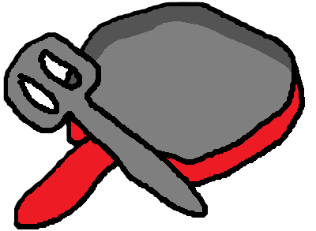

Coleen's German Potato Salad
Ingredients
- 12 slices of bacon, fried and crumbled
- 12 potatoes, boiled to done with a generous amount of salt
- 5 stalks of celery, chopped
- 1/2 cup milk
- 1/2 cup peanut butter
- 2 cups oatmeal
- 1 cup shaved coconut
Method
- Mix butter, sugar, cocoa, and milk in a saucepan, bringing the mixture to a boil.
- Let boil for one minute and remove from heat.
- Add peanut butter, oatmeal, and shaved coconut. Mix until combined.
- Spoon onto tinfoil to cool.